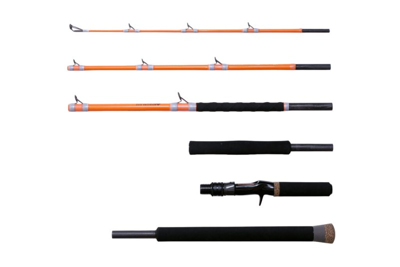
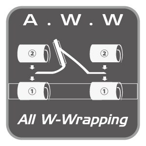
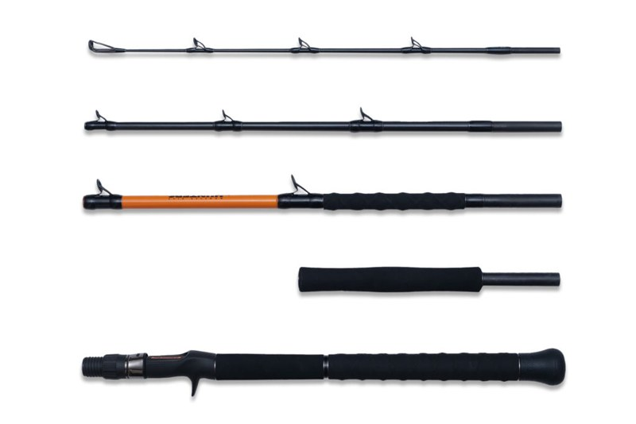
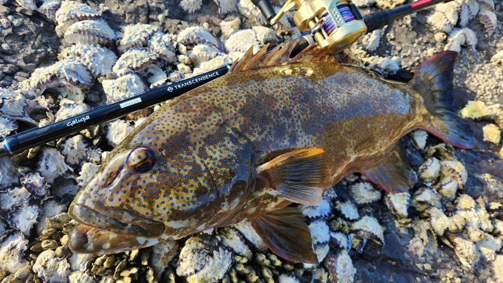
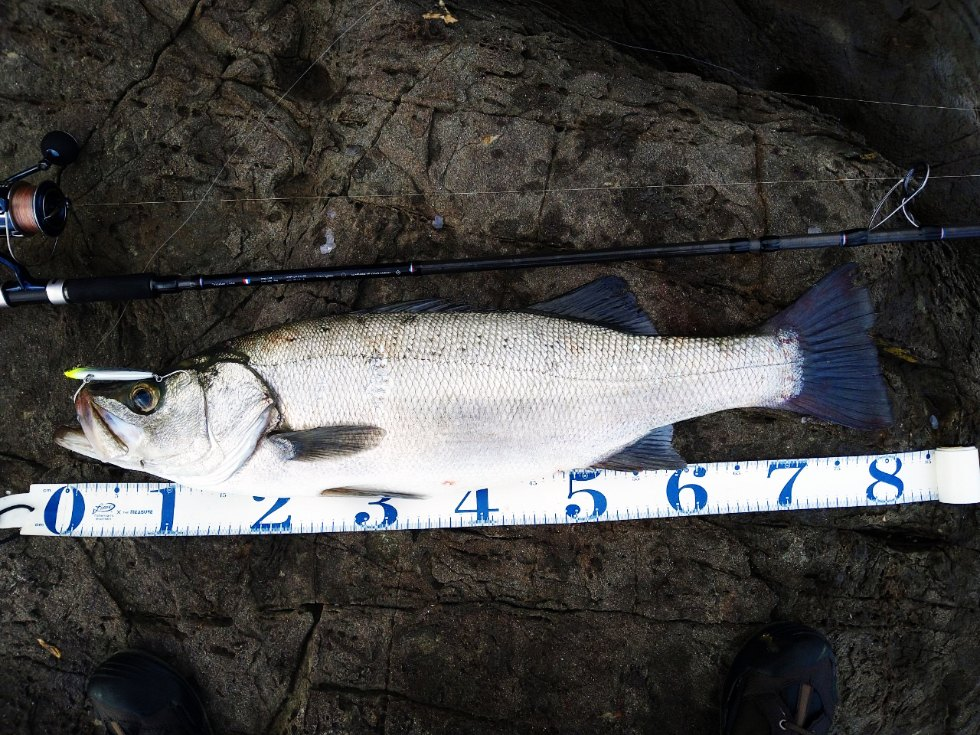

ハンターズ HT-∞∞ ゲームチェンジャー
（NEW HUNTERS HT-∞∞ “Game Changer”）
HT-∞∞ ゲームチェンジャーは、怪魚ハンター・小塚拓矢さんが率いるモバイルロッド専門メーカー、モンスターキスの「HUNTERS（ハンターズ）」シリーズの規格外モデルです。キャッチコピーは「「ゲームチェンジャー」を“常識”で語るなかれ。」
「強靭なバットと繊細なティップの融合」ではなく、強靭なバットに強靭なティップを持たせた「剛は柔を兼ねる」1本が最大の特徴。MAX1000g・PE12号まで扱えて、仕舞寸法は49.5cmです。

画像出典:モンスターキス公式HP
スペック
- メーカー
- モンスターキス（Monster Kiss）
- シリーズ
- HUNTERS（ハンターズ）
- 長さ
- 6'2"〜6'10"（2段階変長）
- 継数
- 5〜6本
- 仕舞寸法
- 49.5cm
- 自重
- 275〜333g
- ルアー重量
- MAX 1000g
- PEライン
- MAX 12号
- パワー
- アンスタンダード（規格外）
- アクション
- レギュラー
- ターゲット
- 海外の怪魚・国内のエイ・サメなどの大物
- 価格
- 36,000円（税抜）
▼今すぐチェック
HT-∞∞ ゲームチェンジャーの特徴
「剛は柔を兼ねる」、強靭なバットに強靭なティップ
-
曲げて獲る、規格外のパワー
パワー表記は「アンスタンダード（規格外）」。ブランクは曲げて獲る特性で、ぶっこみ釣り・泳がせ釣り・トローリングに向く一方、小型フロッグのような繊細な操作や、ジャイアントベイトの釣りもこなせる。
-
フロントグリップの脱着で長さが変わる
エクステンションの抜き差しで長さを変える「VLS（バリアブルレングスシステム）」を採用。フロントグリップを付けると約8インチ（約20cm）長くなり、長さだけでなくパワー感も変わる。
-
壊れにくさを優先した作り
継ぎ部の両側を保護素材で補強する「JPL」、ガイドを全部ダブルフットにした「AWF」、ガイドの下に糸を巻いて二重に固定する「AWW」など、軽さより壊れにくさを重視している。仕舞寸法は、飛行機の機内に持ち込みやすい50cm以下（U50）。

画像出典:モンスターキス公式HP
現行モデルと初代の違い
HT-∞∞ “Gamechanger” は2023年に登場した初代と、現行の「NEW HUNTERS HT-∞∞ “Game Changer”」があります。現行モデルは長くなりながら、軽く、安くなりました。
| 項目 | 現行 |
初代 |
|---|---|---|
| 長さ | 6'2"〜6'10" | 5'10"〜6'6" |
| 継数 | 5〜6本 | 4／ |
| 仕舞寸 |
49.5cm | 50cm |
| 自重 | 275〜333g | 310〜375g |
| ルアー重量 | MAX 1000g | 20〜1000g |
| PEライン | MAX 12号 | MAX 12号 |
| 価格 | 36,000円 |
42,000円 |
初代は「ルアーを扱うショートロッドと、エサ釣り用のロングロッドを1本で」というコンセプトで、アマゾンの釣りを1本で完結させることを目標に作られたモデルです。初代のピース構成はこちらです。

画像出典:モンスターキス公式HP
※モンスターキス公式HPの記載より。
HT-∞∞ ゲームチェンジャーの使い方
長いモードは、ぶっこみ釣りや泳がせ釣りのように、エサを遠くに置いて大物を待つ釣りに。短いモードは、ジャイアントベイトなどルアーを操作する釣りに使います。釣り方に合わせてフロントグリップを付け外しし、エサ釣りは長く、ルアーは短くと使い分けるのが基本です。
規格外のパワーがあっても、やり取りはロッド全体を曲げて獲るのがこのロッドの考え方。ドラグを締めすぎず、ロッドの曲がりで魚の突っ込みを受け止めましょう。
HT-∞∞ ゲームチェンジャーがおすすめの人
海外遠征で怪魚を狙う人や、国内の離島・河口で巨大なエイ・サメなどの大物を狙いたい人におすすめです。
ルアーとエサ釣りの両方を、飛行機に持ち込める1本でこなせるので、荷物を増やせない遠征でもチャンスを逃しにくくなります。電車で行く近場の大物釣りにも使えます。荷物を減らしながら、大物が釣れるチャンスを広げてくれます。
ワンポイント
大物とのやり取りでは、ロッドを立てすぎず、バットに重さを乗せる角度（45度くらい）を保ってポンピングすると、強靭なバットの力を最大限に生かせます。ティップだけで耐えようとすると、どんなに強いロッドでも負担が一点に集中してしまいます。
▼今すぐチェック
HT-∞∞ ゲームチェンジャーとあわせてチェックしたいアイテム
-

ガルッパ86B+ TRANSCENDENCE 詳細はこちら＞ハタなどを根から引きはがす、ロックショア用のベイトパックロッド。
-
 ラグゼ パックスタイル A3
がまかつ
詳細はこちら＞
ラグゼ パックスタイル A3
がまかつ
詳細はこちら＞
A3サイズに収まるパックロッド。青物やビッグベイトのモデルもある。
-

エンピナード91S+ TRANSCENDENCE 詳細はこちら＞磯のヒラスズキ用のパックロッド。遠征でシーバスや青物も狙うなら。